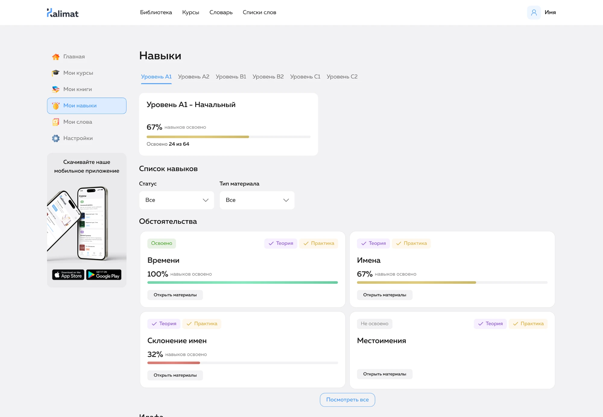
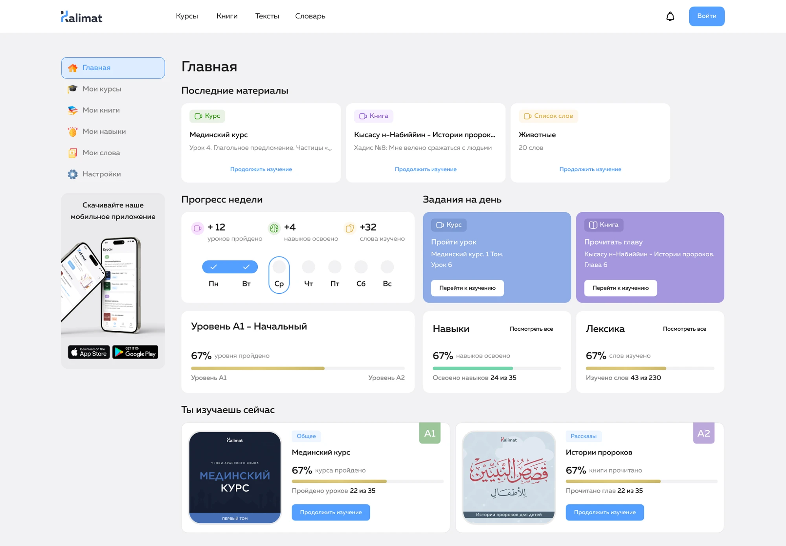
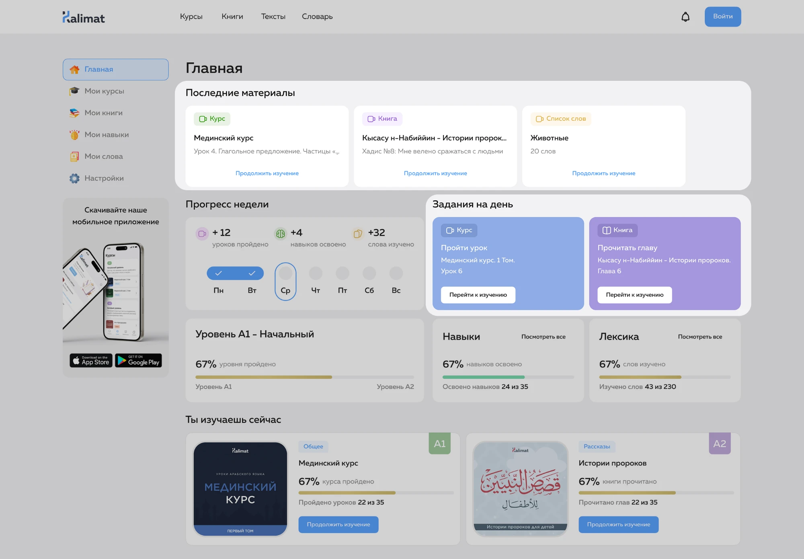
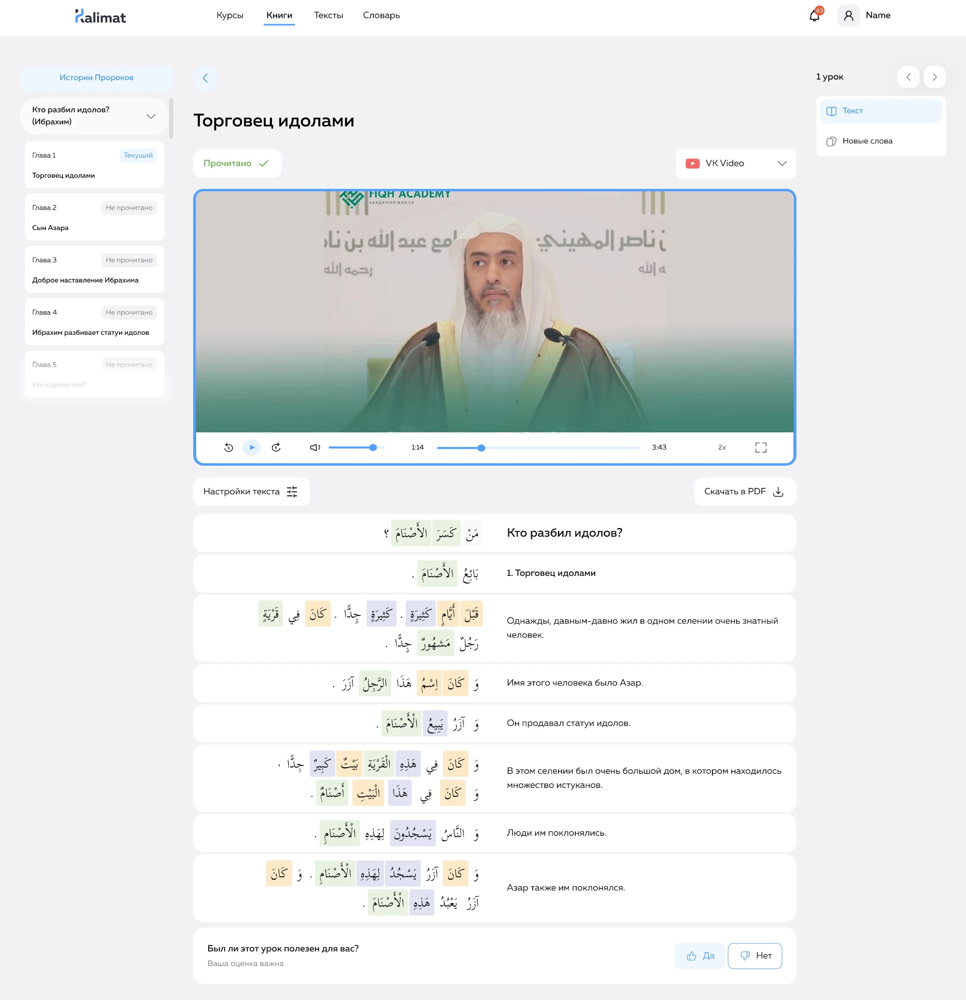

Kalimat
Разработка дизайна образовательной платформы
для изучения арабского языка



До редизайна у Kalimat уже работали курсы, библиотека и словарь.
Пользователь мог учиться, читать и изучать слова, однако связи между этими
действиями не было. В итоге пользователь видел много материалов, но не понимал, в каком порядке их проходить.
Аудитория
Русскоязычные пользователи, изучающие арабский язык: начинающие студенты, продолжающие ученики, а также те, кто хочет читать и понимать религиозные тексты глубже.
Моя роль
В команде были основатель проекта, преподаватели, разработчики и я как дизайнер.
Я работала над продуктом end-to-end: от UX-архитектуры и пользовательских сценариев до визуального языка, дизайн-системы и промо-материалов.
Также участвовала в формировании продуктовой логики: как связать курсы, библиотеку, словарь и профиль в общий сценарий обучения.
Проблема
На старте эти разделы существовали как отдельные образовательные модули. Из-за этого обучение ощущалось фрагментированным: пользователь видел много материалов, но не всегда понимал, с чего начать, как двигаться дальше и насколько он продвинулся.
Для продукта это означало риск низкого удержания: если пользователь не чувствует понятного маршрута и быстрого прогресса, он реже возвращается в приложение.
Задача
Передо мной стояла задача спроектировать личный кабинет не как обычный профиль пользователя, а как центр управления обучением.
- где я сейчас;
- что мне делать дальше;
- какой прогресс я уже сделал.
Продуктовая цель
Собрать курсы, книги, словарь, навыки и прогресс в единую систему, чтобы пользователь воспринимал обучение как последовательный путь, а не как набор отдельных разделов.
Гипотеза
Я сформулировала гипотезу:
если объединить все образовательные сущности вокруг личного кабинета и сделать прогресс прозрачным, пользователю будет проще сохранять фокус, понимать свой путь и регулярно возвращаться к обучению.
Поэтому личный кабинет стал не дополнительным разделом, а основной точкой входа в обучение.
Исследование и продуктовая модель
Я начала с анализа текущих сценариев и пользовательского пути внутри продукта.
- пользователь не понимал, с какого материала начать;
- не было ощущения завершенности;
- прогресс был неочевидным;
- сложно было вернуться к последнему действию;
- слова, книги и курсы не воспринимались как части одной программы.
Главный инсайт
Пользователю нужна не просто библиотека материалов, а система, которая показывает путь, прогресс и следующий шаг.
Привязка уровня к скиллам
Под скиллом мы понимали отдельный блок знаний и навыков, который ученик должен освоить на конкретном уровне. Например, внутри уровня могут быть скиллы по грамматике, лексике, чтению, пониманию текста или другим учебным направлениям.
Изначально уроки могли восприниматься как отдельные материалы: пользователь проходил занятие, но не всегда понимал, какую часть уровня он закрывает и как это приближает его к следующему этапу. Теперь каждый урок связан с конкретным скиллом.
Прогресс как рост навыков
Обычный прогресс по курсу показывает только факт прохождения материала. Для языкового продукта этого недостаточно.
Я связала обучение с навыками и лексикой. Пользователь видит не только, сколько уроков прошёл, но и какие языковые компетенции развивает. Так обучение воспринимается не как просмотр контента, а как накопление знаний.
Связь между разделами
Каждый раздел должен был опираться на другие.
- уроки связаны с навыками;
- книги связаны с уровнем и программой;
- слова сохраняются в словарь прямо из контента;
- словарь показывает лексику в контексте материалов, где она встречалась.
Быстрый возврат к обучению
Для регулярного обучения важно, чтобы пользователь мог быстро продолжить с того места, где остановился.
В личном кабинете я предусмотрела блок последних материалов и дневную норму. Это помогает сократить путь до действия и формирует привычку возвращаться к обучению каждый день.

Связка лексики с прогрессом
Я связала новые слова с контекстом обучения: пользователь встречает лексику в уроках и материалах, а затем переносит её в словарь для повторения.
Так словарь становится не отдельной функцией, а частью учебного процесса.

Результат
В результате получился не просто интерфейс образовательной платформы, а связанная продуктовая система, где курсы, библиотека, словарь и профиль работают вместе.
- появился единый центр управления обучением;
- пользователь получил понятный следующий шаг;
- прогресс стал прозрачным;
- курсы, книги и словарь связались в одну образовательную логику продукта.
Метрики и продуктовая логика
- Time to First Lesson — как быстро пользователь доходит до первого урока;
- завершение урока или главы;
- возврат к последним материалам;
- добавление слов в словарь;
- повторение слов;
- глубина чтения;
- удержание пользователя;
- частота возвращения в обучение.
Эти метрики помогали смотреть на интерфейс не только с точки зрения удобства, но и с точки зрения пользы для продукта: помогает ли решение пользователю быстрее начать, продолжить и вернуться.
Главный фокус кейса — не в количестве экранов, а в том, как через UX-архитектуру и продуктовую логику я помогла превратить сложный образовательный контент в понятный пользовательский путь.